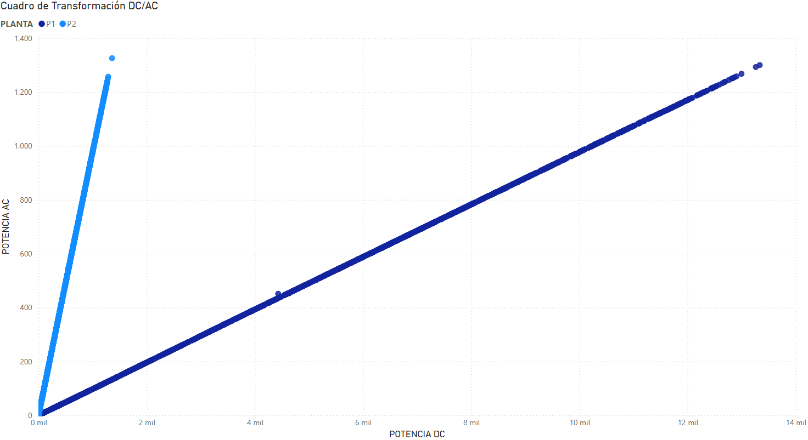

PLANTAS DE GENERACIÓN SOLAR
Compañia de generación, especializada en la generación de energía solar fotovoltaica, ha detectado
comportamientos anómalos en dos (2) de sus plantas solares, los cuales no han podido ser explicados ni
atendidos por el equipo de mantenimiento.
Ante esta situación, se solicita identificar los posibles motivos de las fallas presentadas por medio
del análisis de información obtenida a través los equipos de medida para retroalimentar al equipo de
ingenieros previo a desplazarlos a las zonas de novedad.
OBJETIVO DE ANÁLISIS
Por medio del análisis de los registros reportados por los equipos de medición, establecer las posibles causas de fallas y comportamientos irregulares en las plantas solares, evaluando si existe la necesidad de trasladar a un equipo de ingenieros para atender la afectación.
INDICADORES (KPI's)
- Nivel de Irradiación: Esta permite conocer la energía solar que llegan a los paneles
- Temperatura: Indicador importante para determinar las condiciones generales de la planta, se mide tanto la temperatura ambiente como la del módulo
- Potencia DC: Kilovatios de potencia en corriente continua
- Potencia AC: Kilovatios de potencia en corriente alterna
- Eficiencia: Capacidad de transformación del inversión
CONCLUSIONES EJECUTIVAS
- CALIDAD DE LOS DATOS: La fuente de datos obtenida presenta inconsistencias, por tal motivo se recomienda considerar el trabajo realizado como un modelo preeliminar.
- IRRADIACIÓN POR PLANTA Se evidencia niveles de irradiación similares para las dos planta analizadas, por lo que no se evidencia novedad en este apartado.
- GENERACIÓN DC La planta 2 parece tener deficiencias a la hora de generar energía DC.
- FUNCIONAMIENTO DE LOS INVERSORES En la primera planta solo el 10% de la energía DC que entra se transforma a AC.
DETALLE DE RESULTADOS
CALIDAD DE LOS DATOS
En el momento de análisis se encontraron bastante inconsistencias en los datos entregados, lo que
reduce la viabilidad de los resultados obtenidos.
Para el caso se muestra la situación encontrada en las potencias de las plantas, estas muestran
paridad al momento de encontrarse en AC, sin embargo esto se logra solo al momento de transformarse,
puesto a que en DC la potencia en la planta 1 es mucho mayor.
Es recomendable usar este estudio como punto de inicio para un proceso de reestructuración de datos.
CUADRO 1. INCONSISTENCIA EN LOS DATOS.
IRRADIACIÓN POR PLANTA
Como punto de partida se decidio analizar las condiciones iniciales de ambas plantas, lo que son el
nivel de irradiación, la temperatura ambiente y la temperatura del módulo.
Los resultados obtenidos muestran unas condiciones parecidas, por lo idealmente se pudiera esperar que
cifras de operación cercanas.
CUADRO 2. CONDICIONES GENERALES DE LAS PLANTAS.
GENERACIÓN DC
Se hizo un análisis de la generación DC de cada una de las plantas, esto a partir del estudio de los inversores
cuando estos presentan una potencia DC igual a 0.
Para la planta 1, se observa que los inversores en general tienen alimentación DC, son pocos los inversores que
presentan novedad. Para la planta 2 no se puede decir lo mismo, los resultados registrados en los inversores son
consideras y adicional presentan gran variedad, por lo que se tiene que revisar.
CUADRO 3. GENERACIÓN DC POR PLANTA.
FUNCIONAMIENTO DE LOS INVERSORES
Luego de recibir la energía en DC, los inversores son los encargados de hacer la transformación de la energía
obtenida en corriente continua a corriente alterna, la cual es más adecuada para la industria.
En el objetivo de validar el funcionamiento de esta etapa, se valida la cantidad de potencia
AC finalmente recibida, discriminada por planta.
CUADRO 4. CUADRO DE TRANSFORMACIÓN AC/DC POR PLANTA.

Los resultados muestran una cantidad de potencia AC similares en ambas plantas, lo que a primera vista
puede considerarse como un funcionamiento correcto del sistema, sin embargo y debido a todo lo previamente
revisado se sabe que no es así.
Para la planta 1 se evidencia una clara reducción en el rendimiento de los inversores, encontrandose en un
margen del 10%, con respecto a la planta 2, que cuenta con un rendimiento medio del 96%.
CUADRO 5. CUADRO DE EFICIENCIA PLANTA 1.
CUADRO 6. CUADRO DE EFICIENCIA PLANTA 2.
ACCIONES A TOMAR
El estudio realizado da claros indicios de una deficiencia en alguna parte de los procesos que se estan llevando dentro del sector, la cual no es posible determinar con certeza debido a la inconsistencia encontrada en los datos brindados. Por esta razón es recomendable emplear las siguientes acciones:
- Revisar la captación de datos y su fiabilidad.
- Validar los procesos de mantenimiento en los módulos de los inversores encontrados en la planta 2, debido a que presentan muchos momentos donde la generación DC es nula.
- Verificar los procesos de mantenimiento de los inversores encontrados en la planta 1.
CUADRO 7. RECOMENDACIONES GENERALES.
Disclaimer: El proyecto utiliza datos obtenidos del medio, sin embargo este fue realizado con fines educativo y no debe ser tenido en cuenta para un cuadro de decisión real.